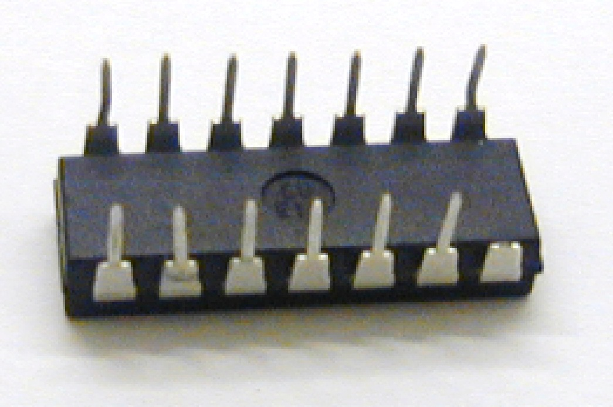
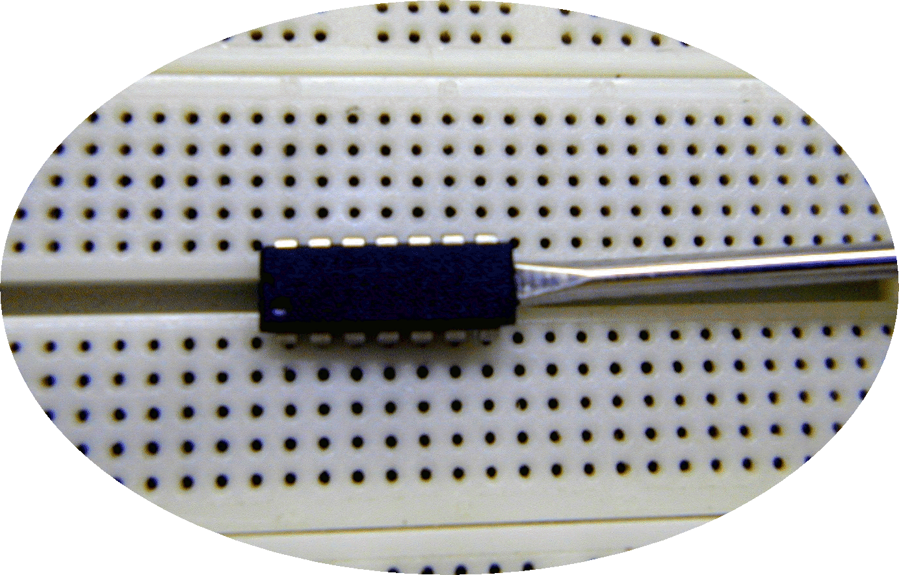

Laboratório Circuitos Lógicos
Semestre 2025/2
Calendário (terminal: % cal -m10 -A 2):
2025 October November December Su Mo Tu We Th Fr Sa Su Mo Tu We Th Fr Sa Su Mo Tu We Th Fr Sa 1 2 3 4 1 1 2 3 4 5 6 5 6 7 8 9 10 11 2 3 4 5 6 7 8 7 8 9 10 11 12 13 12 13 14 15 16 17 18 9 10 11 12 13 14 15 14 15 16 17 18 19 20 19 20 21 22 23 24 25 16 17 18 19 20 21 22 21 22 23 24 25 26 27 26 27 28 29 30 31 23 24 25 26 27 28 29 28 29 30 31 30 Cronograma previsto:
| Data | Tópico |
|---|---|
| 07/10 | Parâmetros Elétricos de CIs Lab 1) Portas básicas AND e NOR |
| 14/10 | (Sem aula) EXAME da Disciplina Teórica |
| 21/10 | Lab 2) Comprovando Álgebra de Boole Lab 5) Decodificadores p/Display 7-Segmentos |
| 28/10 | (Livre) Projeto Lab 6: DEC´s especiais para Display 7-Seg |
| 04/11 | Lab 7) DEC 3/8 (74LS138) + Codificador Prioridade (74LS138) Lab 8) Efeito Visual (Obs.: opcional/se houver tempo) |
| 11/11 | Apresentações Projetos Lab 6 |
| 18/11 | Lab 9) Função F=Maior(A,B) + Teoria de números int com sinal |
| 25/11 | Final Teoria Números int com sinal + Lab 10) Somador/Subtrator binário |
| 02/12 | Provas Práticas (individual) |
Equipes confirmadas para lab 6) Projeto —> clique [aqui]. Data limite: 24/10/2025 23:59.
{kind=link}
Avaliação:
Obs.:
Disciplina sem Exame;
Projeto Lab 6: em grupo de até 2 alunos (caso excepcional de 3 alunos aprovar antecipadamente o professor);
Projeto Lab 6: Pode ser realizado usando Mapas de Karnaugh ou DEC 4/10. Conssiste num projeto de circuito digital completo capaz de mostrar determinados caracteres num display de 7-Segmentos. A turma é dividada em pequenas equipes. Cada equipe realiza o projeto que corresponde a determina lista de caracteres que devem ser exibidos no display para código binário BCD variando na sua entrada (número de [0..9]). Se possível, os proto-board das diferentes equipes serão interligadas para formas palavras conforme previsto no roteiro deste laboratório/projeto. Cada equipe é responsável apenas por determinada coluna. O circuito pode ser implementado usando Mapas de Karnaugh (provavelmente implica muitos CIs de portas lógicas básicas ou CI AOI 74LS54) ou uso de DEC 4/10 (CI 74LS42) + portas AND/NAND dependendo do display usado (ânodo ou cátodo comum). Cada equipe deve apresentar um relatório/documento mostrando como o circuito foi deduzido e implementado (diagrama lógico final) — exemplo de relatório entregue: Dec_Display_7segmentos.pdf .
Revisão Teoria de Circuitos Lógicos;
Vídeo mostrando Exemplo de Projeto de DEC´s Especial para display de 7-Segmentos, de Outubro-2021 (0:42).
Exemplo de Projeto de DEC Especial para Display de 7-Segmentos usando Mapas de Karnaugh. Fazia exibir no display, as letras: [A, b, C, d, E, F, H, I, J, L].
Outro exemplo de solução usando Mapas de Karnaugh mas com circuitos algo otimizados.
Detalhe sobre uso de DEC para Síntese de Circuitos Lógicos Combinacionais usando lógica "direta" ou lógica "inversa" — ver aqui.
Algumas pastilhas que podem ser úteis.
Prova Prática: para cada estudante é sorteado um micro-roteiro diferente. Cada micro-roteiro envolve o projeto de um pequeno circuito lógico digital (sua dedução e diagrama elétrico deve ser apresentado). O estudante deve então montar o circuito. O projeto correto corresponde à 50% da nota. O circuito funcionando completa os restantes 50% da avaliação. Este micro-roteiro é projetado para ser realizado num intervalo entre 45min à 1h30min.
Material extra:
- Tutorial uso do LogiSim (pode ser útil para Projeto do Lab 6); Atenção: recentemente ele foi atualizado para a versão Logisim-Evolution 4.0.0 (atualizado em 07/09/20245; disponível para Windows, macOS, e Linux). A versão antiga (de Out/2013 ainda está disponível aqui)
- Vídeo Tutorial sobre uso do LogiSim (12:24);
- Video Tutorial sobre uso do Proteus (29:25).
{kind=link}
Episódios de aulas passadas:
|  |  |  |
|---|---|---|
| CI mau retirado do porto-board. Justo a perninha do GND quebrada 👉 Não visível quando o CI está encaixado no proto-board 🙃 | Forma sugerida para remover CI. | Outro CI "sofrido" 🤪. |
Fernando Passold, em 24/10/2025 11:28.